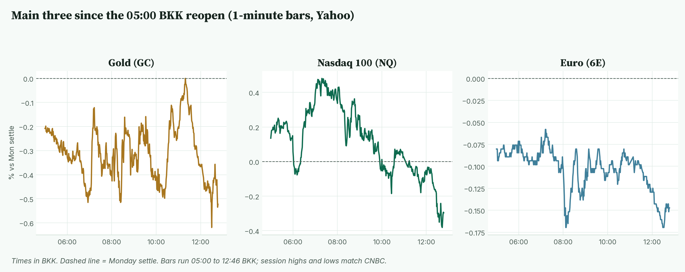
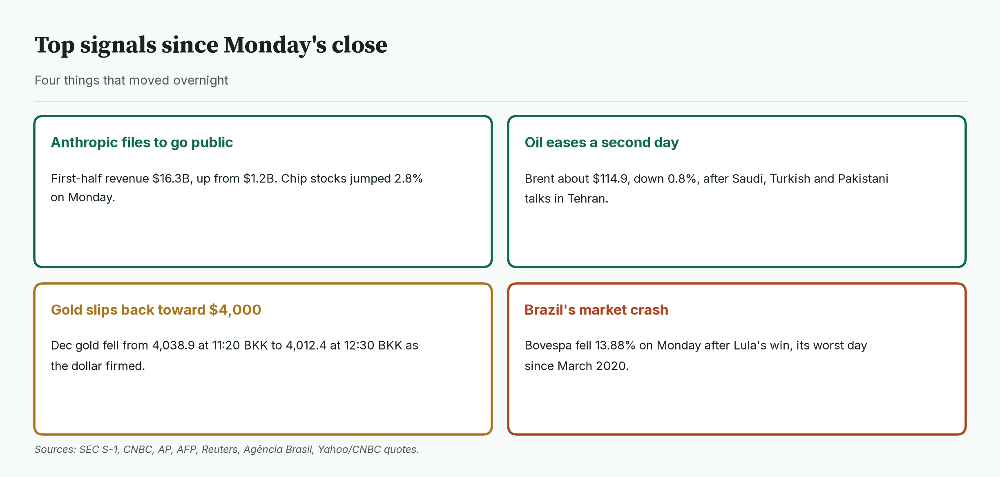
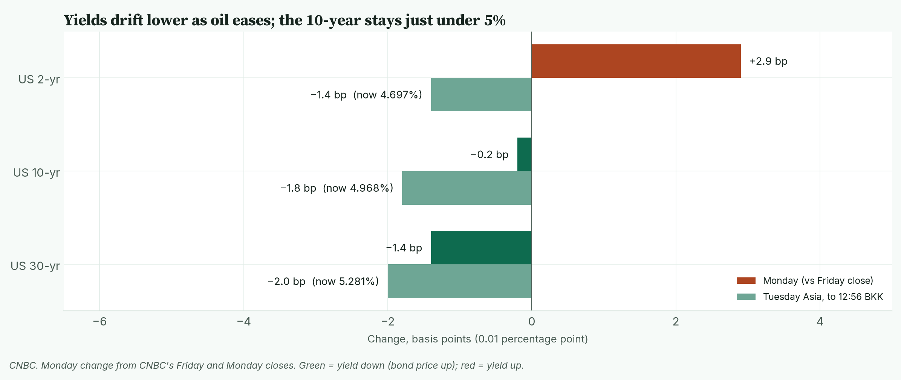
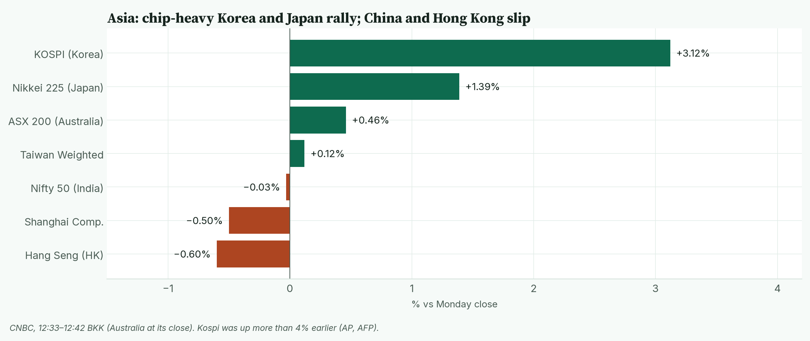
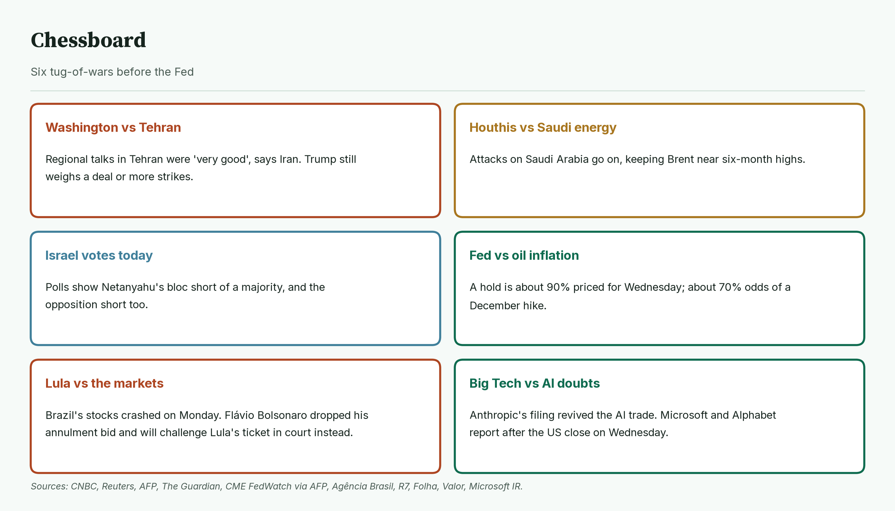
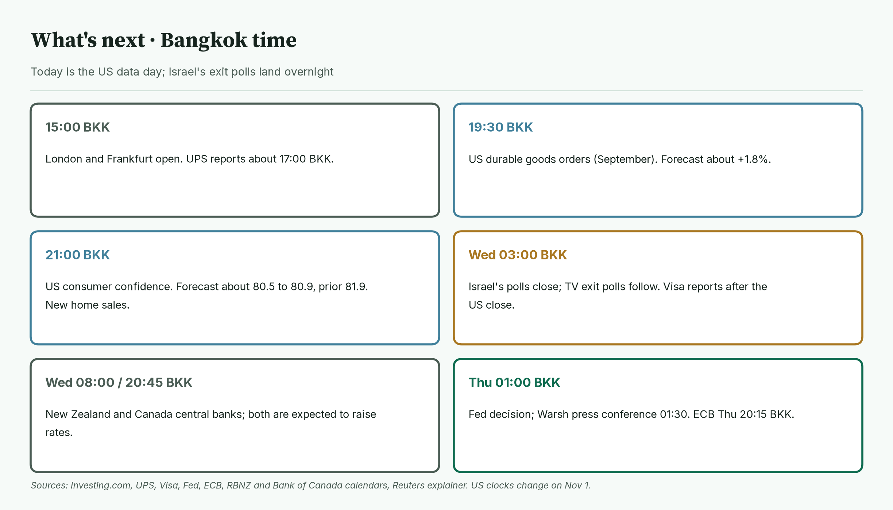
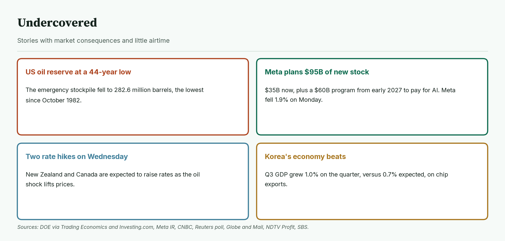
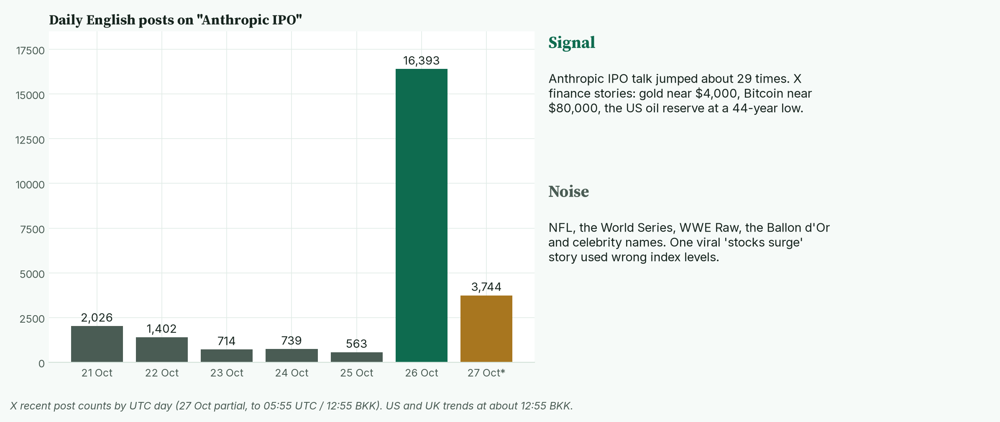

April · Market Intel, pre-London · Tue Oct 27, 2026 · ~13:00 BKK / ~06:00 London
Headline: Anthropic's IPO filing lit up chip stocks overnight, and Korea's Kospi jumped as much as 4.9% at its high (CNBC). But in Asia the main three slipped. Gold is down 0.5% at 4,017.4, Nasdaq futures are down 0.3%, and the euro is down 0.15%.
Oil eased for a second day on Iran diplomacy. Brent is about $114.9. So what: today's tests are US durable goods at 19:30 BKK and consumer confidence at 21:00 BKK. Israel's exit polls land at about 03:00 BKK Wednesday. The Fed decides early Thursday BKK.
1) Main instruments The three main contracts since the 05:00 BKK reopen, as a % move from Monday's settle. Nasdaq peaked at 07:03 BKK and has faded since; gold gave up a late-morning bounce. |
(Futures are contracts that trade nearly around the clock, so they show the mood before stock markets open. Quotes are from the Yahoo Finance futures feed at 12:46 BKK (05:46 UTC), about 10 minutes delayed, and match CNBC. Ranges use 1-minute bars from the 05:00 BKK reopen; today's bars start at 05:00. Session highs and lows match CNBC.)
- Gold futures (GC, Dec): 4,017.4, −0.52%, at 12:46 BKK. Driver: a firmer dollar outweighs cheaper oil (ET Now). Gold is priced in dollars, so a stronger dollar makes it dearer for everyone else. Monday's settle was 4,038.4. Today's range is 4,012.4 (12:30 BKK) to 4,038.9 (11:20 BKK). Gold is about 28% below its Jan 29 high of 5,586.2 (CNBC contract data).
- Nasdaq 100 futures (NQ, Dec): 29,347.25, −0.31%, at 12:46 BKK. Driver: early gains on Monday's AI rally faded through Asia. I found no single headline for the fade. My read is caution before Microsoft and Alphabet report on Wednesday; that is not confirmed. The settle was 29,437.25. The high was 29,589.50 (07:03 BKK); the low was 29,318.00 (12:43 BKK).
- Euro futures (6E, Dec): 1.1189, −0.15%, at 12:46 BKK. Driver: the dollar is a little firmer. On Monday, Société Générale said the euro stays vulnerable while growth is weak and energy is dear (CNBC). The settle was 1.1206 (CNBC; Yahoo 1.12055). Today's range is 1.1185 (08:08 BKK) to 1.1201 (05:00 BKK). Spot euro is 1.1165, −0.06% (CNBC, 12:56 BKK).
- Takeaway: all three are drifting lower in quiet trade; Nasdaq sits right at its session low.
Context. The dollar index (DXY, the dollar against six major currencies) is 102.09, +0.13% (CNBC, 12:56 BKK). The 10-year US yield (what the US government pays to borrow for 10 years) is 4.968%, down 1.8 basis points (CNBC, 12:56 BKK; a basis point is 0.01 percentage point). The VIX (the "fear gauge" built from S&P 500 option prices) closed Monday at 18.39, −5.45% (Cboe via CNBC). US oil (CL, December) is 100.94, −0.81% (12:46 BKK). Brent (December) is 114.90, −0.79% (CNBC, 12:46 BKK). S&P 500 futures (ES) are 7,710.00, −0.06% (12:46 BKK). Bitcoin is $79,872, −0.17% since 00:00 UTC (Yahoo, 12:56 BKK).
2) Top signals Four overnight changes. AI optimism came back, oil eased, gold slipped and Brazil's market crashed. |
- Anthropic filed to go public. First-half revenue was $16.3 billion, up from $1.2 billion. Its $80.7 billion net loss is mostly a $72.4 billion non-cash accounting charge. (High: SEC filing, CNBC)
- Chips rallied. The Philadelphia chip index rose 2.82% to 11,083.47 on Monday (CNBC).
- Oil eased. Saudi, Turkish and Pakistani officials held talks in Tehran on Monday. (High: Reuters, CNBC)
- Brazil crashed. The Bovespa fell 13.88%, its worst day since March 2020. (High: Agência Brasil, Reuters)
- Takeaway: the AI trade is back on, but futures are not chasing it ahead of the Fed.
3) Rates, FX and oil Short-term yields rose on Monday; all three are slipping in Asia as oil eases. |
- Monday's US yield closes: 2-year 4.711%, 10-year 4.986%, 30-year 5.301% (CNBC). The 2-year rose about 3 bp; the 10-year was flat.
- Now: 2-year 4.697%, 10-year 4.968%, 30-year 5.281% (CNBC, 12:56 BKK).
- Mentor: bond prices rise when yields fall. Cheaper oil means less inflation worry, so yields edge down.
- Fed. A hold at 3.75% to 4.00% is about 90% priced for Wednesday (CNBC, Investing.com). CME FedWatch shows about a 70% chance of a hike in December (AFP). The Fed's two-day meeting starts today.
- FX. The yen is at 157.72 per dollar (CNBC, 12:56 BKK). On Monday the dollar jumped 8.21% against Brazil's real (Agência Brasil).
- Oil. Brent's range today is 114.51 to 115.43; WTI's is 100.60 to 101.60 (CNBC). Brent topped $117 on Friday, its highest intraday level since late April (Reuters via Baird Maritime). It briefly topped $117 again on Monday (CNBC). Friday's $116.72 settle was the highest since April 29 (Reuters). On Monday it settled at $115.81 (Reuters, CNBC).
- Takeaway: oil still sets the tone for yields; the 10-year is holding just under 5%.
4) Why it matters Asia at about 12:33–12:42 BKK. Chip-heavy Korea and Japan lead; Hong Kong and Shanghai slip. |
Monday's US rally was about AI, and it spread to Asia's chipmakers.
- The S&P 500 rose 0.70% to 7,676.77. The Nasdaq Composite rose 0.82% to 26,169.38. The Dow rose 0.28% to 52,361.58. (CNBC)
- Not all tech joined in. Alphabet fell 1.06% and Meta fell 1.88% (CNBC).
- Korea's Kospi is up 3.12% (CNBC, 12:36 BKK). SK Hynix rose about 7% at midday (AP).
- Korea's economy grew 1.0% in the third quarter, versus 0.7% expected (NDTV Profit, SBS).
- Japan's Nikkei is up 1.39% (CNBC, 12:41 BKK). Advantest jumped more than 10% (AP).
- Mentor: an IPO filing reveals a private company's real numbers. Anthropic's fast revenue growth suggests AI spending is earning money, which helps chipmakers.
- Takeaway: the rally is narrow. Chips are up, but Nasdaq futures have faded; Microsoft and Alphabet on Wednesday night US time are the real test.
5) Chessboard Six tug-of-wars before the Fed. Iran and Israel's vote can move oil and gold fastest. |
- Washington vs Tehran. Iran called Monday's talks "very good" (AFP). The four countries agreed to keep talking (Iranian state media, via Reuters). Trump is still weighing a deal or more strikes (CNBC).
- Houthis vs Saudi energy. Houthi attacks on Saudi Arabia continue (Reuters). That keeps Brent near six-month highs.
- Israel votes today. Most polls show Netanyahu's bloc losing its majority. The opposition also looks short of the 61 seats needed. (High: The Guardian)
- Fed vs oil inflation. A hold is expected; the fight is over December. (High: CME FedWatch via AFP)
- Lula vs the markets. Flávio Bolsonaro is still contesting the result, but on Monday he dropped his plan to seek annulment. He now says he will file an electoral-abuse case to strip the Lula–Alckmin ticket (R7, Folha, Valor).
- Big Tech vs AI doubts. Anthropic's filing revived the AI trade. Microsoft and Alphabet report after the US close on Wednesday (Microsoft IR, CNBC).
- Takeaway: the biggest overnight risk is the Israeli exit poll at about 03:00 BKK, then any Iran decision.
6) Leading indicators (BKK times) Today brings US data and Israel's exit polls. The big tests are the Fed early Thursday BKK and the ECB on Thursday evening BKK. |
- 15:00: London and Frankfurt open. UPS reports at about 17:00 (UPS). Coca-Cola and Boeing also report before the US open (Yahoo earnings calendar).
- 19:30: US durable goods orders (orders for long-lasting goods such as machines and planes). Forecast about +1.8% to +1.9% (Investing.com, GGMA previews).
- 20:30: US stock market opens.
- 21:00: US consumer confidence (a monthly survey of how households feel). Forecast about 80.5 to 80.9, prior 81.9. New home sales also come out.
- Wednesday 03:00: Israel's polls close. TV exit polls come out straight away; they are projections, not results (Reuters explainer). Visa, NXP and Robinhood report after the US close (Yahoo earnings calendar).
- Wednesday 08:00: New Zealand's central bank. 20:45: Bank of Canada. Both are expected to raise rates (Investing.com, Reuters poll).
- Thursday 01:00: Fed decision, and Chair Warsh speaks at 01:30. Thursday 20:15: ECB.
- Levels to watch: GC 4,012.4 and 4,038.9. NQ 29,318.00 and 29,589.50. 6E 1.1185 and 1.1201. 10-year 5.00%. Brent 114.51.
- Takeaway: today's deciders are consumer confidence at 21:00 BKK and the Israeli exit polls at 03:00 BKK.
7) Undercovered Four stories with little airtime. They touch oil buffers, AI funding and the global rate cycle. |
- The US emergency oil reserve is at a 44-year low. It fell to 282.6 million barrels in the week to Oct 23, the lowest since October 1982. (High: DOE data via Trading Economics, Investing.com)
- Meta plans to sell $95 billion of new stock. About $35 billion now, and a $60 billion program from early 2027, to pay for AI. (High: Meta, CNBC)
- Two rate hikes are expected on Wednesday. New Zealand and Canada would be raising rates as the oil shock lifts prices. Canada would hike for the first time in three years. (High: Reuters poll, Globe and Mail)
- Japan's service prices are rising faster. Services producer prices rose 3.7% a year in September, the most since June 2024. The Bank of Japan watches this before its Friday decision. (Medium: NDTV Profit)
8) What's trending on X (~12:55 BKK) Daily English posts mentioning "Anthropic IPO", plus today's trends sorted into signal and noise. Posts jumped from 563 on Oct 25 to 16,393 on Oct 26. |
- US: Brewers, Eagles, Cowboys, Jay-Z, #WWERaw, #WorldSeries2026.
- UK: Harry Kane, #BallonDor, Mbappe, Messi, World Cup, Bundesliga.
- Signal: no market topic is in the top trends. X finance stories focus on gold near $4,000, Bitcoin near $80,000 and the oil reserve's low (Medium: X news summaries).
- Data point: posts on "Anthropic IPO" rose about 29 times, from 563 on Oct 25 to 16,393 on Oct 26. (X post counts)
- Mood, not evidence: a Galaxy Research call that Bitcoin's bear market ended in June is being shared. Gold chart watchers argue over $4,000 support.
- Noise: one widely seen X story said stocks surged after Trump held off an Iran strike, but its index levels were wrong. The S&P 500 closed at 7,676.77, not the 6,795.99 it quoted (CNBC).
- Noise: NFL, the World Series, WWE, the Ballon d'Or and celebrity names.
Bottom line
The AI mood improved overnight, but futures are drifting lower while traders wait for the Fed. For Jim: gold has to hold 4,012.4, today's low, or the $4,000 test comes back. It needs to retake 4,038.9 to turn positive. Nasdaq is sitting at its session low of 29,318.00; 29,589.50 is the level that would show buyers are back. The euro is stuck in a narrow 1.1185 to 1.1201 band. US confidence at 21:00 BKK is the likeliest trigger for a break. Interpretive note: in Fed weeks, the day before the decision is often quiet until US data. An exit-poll surprise in Israel is the wild card for oil and gold overnight. That is a read, not a forecast.
Confidence: Futures levels: high for direction, medium-high for the exact tick (Yahoo feed, about 10 minutes delayed; settles and session ranges match CNBC). US closes and yields: high (CNBC). Brent: CNBC December contract. Fed odds: medium-high (CME FedWatch via AFP; CNBC, Investing.com). Data forecasts: medium (Investing.com and one other preview). NQ fade driver: my read, not confirmed. Japan services prices: medium (single source). X news summaries: medium.
Charts: /workspace/april-charts/2026-10-27/pre-london-{scoreboard,main3,signals,rates,asia,chess,leading,under,xsplit}.png |